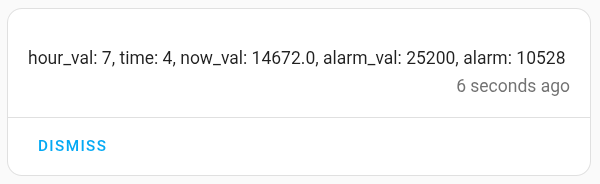

Wrinkes
Simple things make life easier. Some of these have been mentioned elsewhere.
Assist debug
Troubleshooting "I'm sorry I don't understand" is easier if you know what your voice assistant actually heard. Assist debug will tell you this (Settings | Voice assistants, then click on the "three dots" overflow menu next to your voice assistant's name).

"25 to 3" is not the same as "twenty-five to three".
Collisions
In theory custom sentences should take precedence over built-in sentences, but this doesn't always happen. It's a particular problem when the custom sentence contains the words "in" or "on" - "What's in the diary?" is likely to give the error "No area named diary".
You can reduce the chances of this by creating a unique sentence first, then adding the problem sentence as an alternative. For example:
language: "en"
intents:
CustomCalendarToday:
data:
- sentences:
- "(What's | What is) happening"
- "(What's | What is) in the (calendar | diary)"
Numbers
In custom sentences it's pretty safe to use words for numbers below twenty - "twelve" rather than "12". Above twenty your voice assistant may start rendering the numbers it "hears" as numerals - "25" rather than "twentyfive", so it may be necessary to include both in your custom sentences.
This is because of the way Home Assistant’s intent recognition handles numbers, favouring word forms for common small numbers and numeric forms for larger or compound numbers, but the user's voice and intonation can also have odd effetcts.
You can avoid the problem by defining numbers as ranges rather than in lists.
minute:
range:
from: 0
to: 59
Variables
If your intent script uses a lot of variables you may find that it runs, but the answer is not what you expected.
You can include a persistent notification to troubleshoot variable values:
- action: persistent_notification.create
data:
message: "hour_val: {{ hour_val }}, time: {{ time }}, now_val: {{ now_val }}, alarm_val: {{ alarm_val }}, alarm: {{ alarm }}"

Handling time
If you need to compare times, it's much easier if you convert them to seconds first.
Common actions like delay and timer.start accept parameters in seconds, so it's not necessary to convert them back.